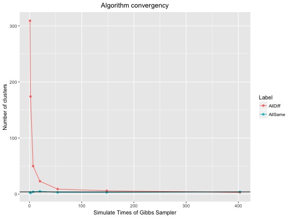
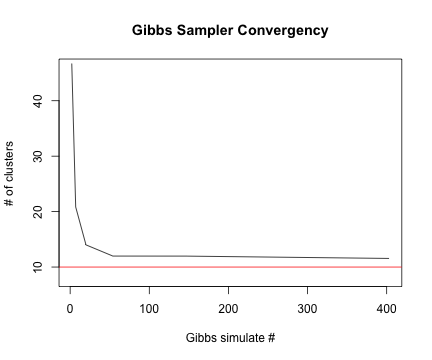

Dirichlet Process Mixture Models
Models and Inferences
Xiaorui Zhu
Business Analytics
Contents
- Stick-Breaking and Chinese Restaurant Process
- Dirichlet Process Mixture Models
- Conjugate Prior
- Gibbs Sampling Algorithms
- Simulation results
Dirichlet Process
\(DP\) is a random measure defined as: \[\mu = \sum^{\infty}_{n=1} p_n \delta_{\phi_n}, \] where:
- \((p_n)_{n\in N}\) are random weights by stick-breaking construction with parameter \(\theta\)
- and \((\phi_n)_{n\in N} \overset{iid}{\sim} G_0\) is "the base measure".
Therefore, \(\mu \sim DP(\theta, G_0)\) has following repressentation:
\[\begin{array} {rl} \mu & = \; \displaystyle \sum^{\infty}_{i=1} \Big[ V_i \prod^{i-1}_{j=1}(1-V_j) \Big] \delta_{\phi_i} \\ V_i & \overset{iid}{\sim} \; Beta(1, \theta) \\ \phi_i & \overset{iid}{\sim} \; G_0 \end{array}\]
Stick-Breaking construction
Let \((V_n)_{n\in N}\) be i.i.d. \(\text{Beta}(1,\theta)\) random variables.
That is, \(P(V_1\in dx) = \theta (1 − x)^{\theta−1} \textbf{1}_{{x\in (0,1)} }dx.\)
Consider:
\[\begin{array} {rl} P_1 & := \; V_1 \\ P_2 & := (1-V_1)V_2 \\ P_3 & := (1-V_1)(1-V_2)V_3 \\ & \vdots \\ P_{n+1} & := \displaystyle V_n \prod^{n-1}_{j=1}(1-V_j) \end{array}\]
Stick-Breaking construction

Chinese Restaurant Process (CRP)
- Imagine a Chinese restaurant that has unlimited number of tables.
- First customer sits at the first table.
- Customer \(n\) sits at:
- Table \(k\) with probability \(n_k/(\alpha_0+n−1)\), where \(n_k\) is the number of customers at table \(k\).
- A new table \(k + 1\) with probability \(\alpha_0/(\alpha_0+n−1)\)
In this metaphor, customers are analogies of integers and tables of clusters. This process can also be summarized as follows: \[p(c_n=k|c_{1:(n-1)}) = \{ \begin{array} {l} \frac{n_k}{\alpha_0+n−1 }, \; \text{if occupied table;} \\ \frac{\alpha_0}{\alpha_0+n−1}, \; \text{if new table} \end{array} \]
Animation of (CRP)
Simulation of Asymptotics
Asymptotics of \(K_n\): Number of clusters
- Theorem: \(\displaystyle \text{lim}_{n\rightarrow\infty}K_n/\text{log}n = \theta\) almost surely.

Simulation of Asymptotics
- Theorem: Asymptotic distribution of \(K_n\): \[\frac{K_n-\mathbb{E}K_n}{\sqrt{\text{Var}(K_n)}} \Rightarrow \mathcal{N}(0,1)\]

MCMC & Gibbs Sampler
Markov chain Monte Carlo simulation(MCMC): is a general method based on drawing values of \(\theta\) from approximate distributions and then correcting those draws to better approximate the target posterior distribution, \(p(\theta|y)\).
Gibbs Sampler: also called alternating conditional sampling. Each iteration draws each subset conditional on the value of all the others \((\theta = (\theta_1, \cdots , \theta_d))\).
Conjugate Prior is importants
If the posterior distributions \(p(\theta|x)\) are in the same family as the prior probability distribution \(p(\theta)\) , the prior and posterior are then called conjugate distributions, and the prior is called a conjugate prior for the likelihood function.
Model parameter \(\mu\): mean of Normal with known variance \(\sigma^2\).
Prior of \(\mu\) is \(\mathcal{N}(\mu_0, \sigma^2_0)\)
By derivation, posterior distribution is :
\[\mathcal{N}\Bigg(\Bigg(\frac{1}{\sigma _{0}^{2}}+\frac{n}{\sigma ^{2}} \Bigg)^{-1} \Bigg(\frac{\mu _{0}}{\sigma _{0}^{2}}+\frac{\sum _{i=1}^{n}x_{i}}{\sigma^{2}}\Bigg),\Bigg(\frac {1}{\sigma _{0}^{2}}+\frac{n}{\sigma ^{2}}\Bigg)^{-1}\Bigg)\]
DPMM & Gibbs Sampler Algorithm
Simple Mixture Model: \[\begin{array} {l} y|\theta_i \sim \mathcal{N}(\theta_i, 1) \\ \theta_i \sim G \\ G \sim DP(\alpha, G_0) \\ G_0 \sim \mathcal{N}(0,2) \end{array}\]
Likelihood function: \(F(y_i|\theta) = \frac{1}{\sqrt{2\pi}}e^{\frac{1}{2}(y_i - \theta)^2}\)
Posterior distribution \(H_i = p(\theta|y_i)= \frac{F(y_i|\theta)G_0(\theta)}{\int{F(y_i|\theta)G_0(\theta)}}= \frac{1}{\sqrt{2\pi}\sqrt{2/3}}e^{\frac{(\theta - \frac{2}{3}y_i)^2}{2 * (2/3)}}\)
DPMM & Gibbs Sampler Algorithm
The conditional distribution for Gibbs sampling is as following:
\[\begin{array} {rl} \theta^t_{i}|\theta^t_{-i},y_i \sim & \sum_{j\ne i} q_{i,j} \delta(\theta^t_j) + r_i H_i \\ q_{i,j} = & b_i F(y_i, \theta_j) \\ r_i = & b_i \alpha \int F(y_i, \theta)G_0(\theta) \\ \text{where } b_i \text{ satisfied} & \sum_{j\ne i}q_{i,j} + r_i = 1 \end{array}\]
\(\int{F(y_i|\theta)G_0(\theta)} = \frac{1}{\sqrt{6\pi}}e^{\frac{1}{6}(y_i)^2}\)
or another simple way: \(\Big(= \frac{F(y_i|\theta)G_0(\theta)}{H_i(\theta|y_i)}\Big)\)
DPMM & Gibbs Sampler Algorithm
\[\begin{array} {ll} \hline \textbf{Algorithm:} & \text{Gibbs Sampler for DPMM} \\ \hline 1.\mathbf{Input:} & \mathbf{y} \in \mathbb{R}^n,\; \\ & \theta_i \in (0,1), i=1,\cdots, n \\ 2. \mathbf{Repeat:} & (1) \; q^*_{i,j} = F(y_i, \theta_i) \\ & (2) \; r^*_{i} = \alpha \int F(y_i, \theta_i) d G_0(\theta) \\ & (3) \; b_{i} = 1/(\sum^n_{j=1} q^*_{i,j} + r^*_{i} ) \\ & (4) \; \text{Draw} \; \theta^t_{i}|\theta^t_{-i,y_i} \sim \sum_{j\ne i} b_i q^*_{i,j} \delta(\theta^t_j) + b_i r^*_i H_i \\ & (5) \; \text{Update} \; i=1, \cdots, n \\ 3. \mathbf{Deliver:} & \hat\theta = \theta^{(t)} \\ \hline \end{array}\]
Convergency of Algorithms
Average total number of clusters \((K_n)\) v.s iteration times \((M)\) of Gibbs Sampler (Algorithm 1).
\((N=100, M\in (2,7,20,54,148,403), \text{Rep}=100)\)

- Algorithm 1 converge very quick.
- When \(M>50\), total number of cluster from Gibbs Sampler is acceptable.
Convergency of Algorithms
Histogram of 100 replications for every given M:

- Total number of clusters approach the truth when M increases (\(n^0_c=10\))
Inference of cluster center
Centers of clusters might be of interest to you.

Inference of cluster center
Animation of Centers of each cluster (100 simulation):